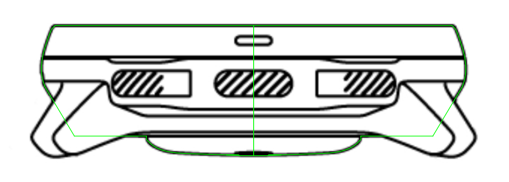

Suunto Ocean · cassa
Fase 1 · profilo + revolve · senza anse e bottoni
Trascina per ruotare · rotella o pizzico per lo zoom
Intero
Sezione
3/4
Laterale
Dall'alto
Fondello
Mostra wireframe

Profilo del modello (verde) sopra la vista laterale del disegno tecnico. Il fianco sotto la lunetta continua dritto, dietro le anse, fino alla linea di fondo più bassa.